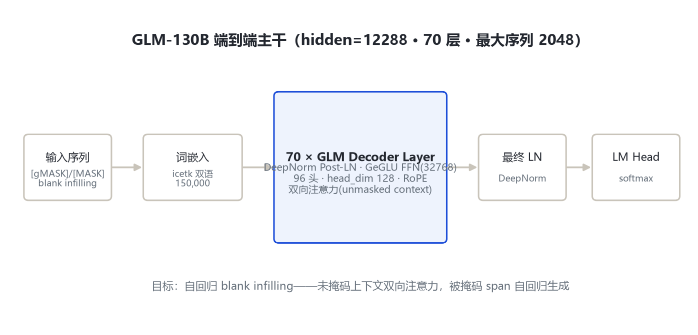
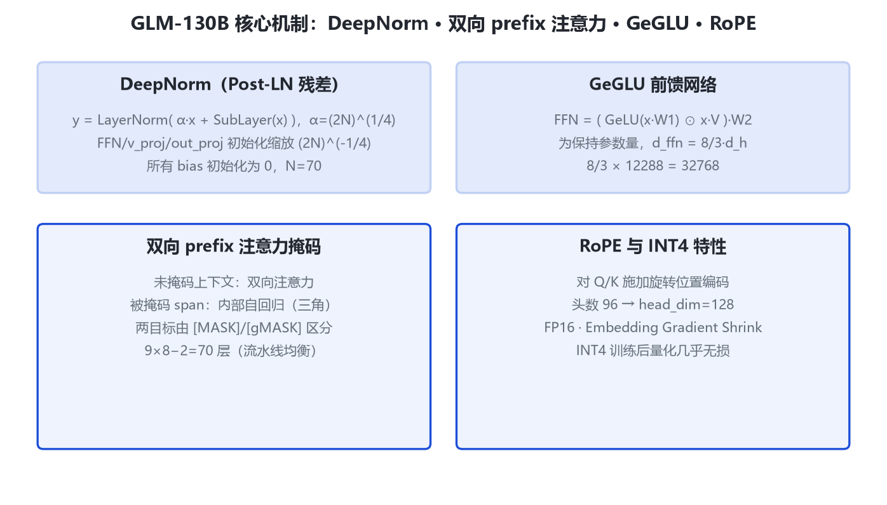

本页以官方论文 arXiv:2210.02414 与官方 GitHub 为唯一依据。GLM-130B 无公开 HF 权重、transformers 无原生模块，数字逐字段来自论文 §2 与附录 Table 11。
单一稠密 130B 尺寸。数字来源：官方论文 arXiv:2210.02414 §2 与附录 Table 11。
| 字段 | 取值 | 来源 |
|---|---|---|
| 参数量 / 形态 | ≈130B 稠密双语（中英） | 论文 §1/§2.1 |
| 层数 | 70（9×8−2 流水线均衡） | 论文 §2.3 |
| hidden_size | 12288 | 论文 §2.3 / T11 |
| 注意力头数 | 96（head_dim=128） | 公开口径（待确认） |
| FFN hidden | 32768（=8/3·12288） | 论文 T11/§B.3 |
| 归一化 | DeepNorm Post-LN，α=(2N)^(1/4) | 论文 §2.1 |
| FFN 激活 | GeGLU（GLU+GeLU） | 论文 §B.3 |
| 位置编码 | RoPE | 论文 §B.3 |
| 最大序列 | 2048 | 论文 §2.3 |
| 分词器 / 词表 | icetk（sentencepiece）/ 150000 | 论文 §B.1 |
破坏 span→[MASK]/[gMASK] → icetk 嵌入 → 70×GLM 层（双向/自回归混合注意力+GeGLU）→ 最终 LN → softmax。

相比 Pre-LN，DeepNorm Post-LN 把深层主分支 value 尺度约束在有界范围，是 70 层稳定训练的关键。

采样 span 替换为单个 mask 标记，自回归重建；span 间可见性由随机排列决定。
[MASK] 单 span（窗512拼4）；[gMASK] 多 span（窗2048）。
反直觉地选 Post-LN 稳定训练；Embedding Gradient Shrink 把嵌入梯度缩到 0.1，抑制 loss spike。
FFN=(GeLU(xW1)⊙xV)W2；引入 V 后 d_ffn 由 4·d_h 降到 8/3·d_h 保持参数量。
权重分布形状良好，无需量化训练即可 INT4 推理，4×3090 可跑。
与 GPT 式因果注意力的根本差别：未掩码上下文双向可见。头数 96、head_dim 128 由官方口径与 hidden 复算，附录 config 未逐字段列出，标「待确认」。
| 项 | 取值 |
|---|---|
| 分词器 | icetk 图像-文本统一（前 20000 为图像 token） |
| 词表 | 150000 |
| 破坏标记 | [MASK] / [gMASK] 两类目标 |
| 上下文窗 | gMASK=2048；MASK/MIP=512（4 样本拼接） |
| 维度 | GLM-130B | ChatGLM-6B |
|---|---|---|
| 规模 | 130B 双向基座 | 6.2B 对话 |
| 层/hidden | 70 / 12288 | 28 / 4096 |
| 位置编码 | RoPE 1D | 2D-RoPE |
| 归一化 | DeepNorm Post-LN | LayerNorm |
| 上下文 | 2048 | 2048 |
| 词表 | icetk 150000 | 130528 |
数据来自各模型官方 config / 论文：层数、hidden、FFN、词表（千）等字段逐值复算。